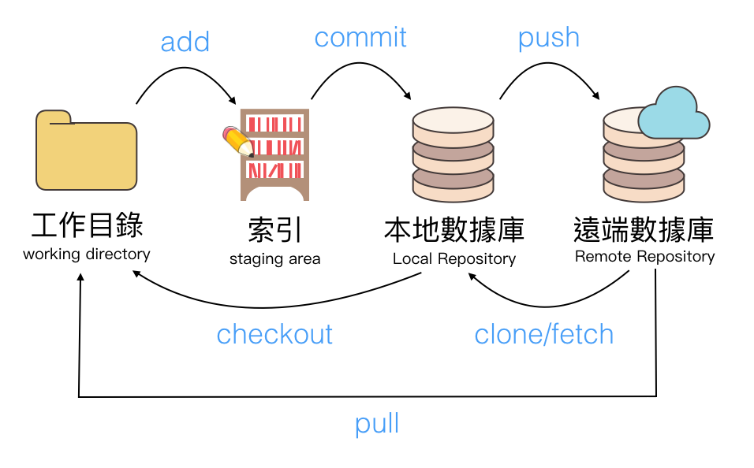

掌握Git & Github 程式時光機
udemy課程網址以下為課程筆記，內容版權為原課程所有。
[TOC]
Table of Contents
- 掌握Git & Github 程式時光機
整體流程圖

上傳流程
產生本地端數據庫 (Local Repository)
git init 產生本地端數據庫(local repository)
在工作目錄內新增檔案
1 | # 產生index.html, index2.html檔案 |
從工作目錄傳到索引
- add changes from working directory to staging area
1 | #把所有的檔案加到索引裡面，代表的是開始要追蹤這些檔案的變更 |
把變更加入到本地儲存庫
- commit changes from staging area to local repository
- 確認這些變更
1 | #commit之後會放到本地儲存庫 |
不想上傳變更了
忽略追蹤
.gitignore- 不想追蹤的檔案，就放到.gitignore裡面
- 可以參考 github的.gitignore
1 | vim .gitignore |
不追蹤原本在索引中的檔案
reset head in staging area
git reset HEAD ：不追蹤目前在staging area的檔案git reset HEAD 檔案名稱 ：不追蹤staging area特定的檔案名稱
從本地儲存庫還原檔案至工作目錄
check out files from local repository
效果就是還原檔案
git checkout 檔案名稱
還原工作目錄與索引
檔案內容會跟最後一次commit保持一樣git reset --hard
本地及遠端儲存庫之間的操作
把本地儲存庫推到遠端儲存庫
git push
把遠端儲存庫複製到本地端儲存庫
git clone https://github.com/username/repo_name.git
分支分支分支
查看目前有哪些分支
git branch 瀏覽目前有哪些分支
HEAD：目前所在位置的指標
回到特定的commit
1 | git log # 看看要回到哪個commit |
創立分支
git branch branch_name
1 | # 創立分支 |
fast forward 合併分支
1 | cd desktop |
當兩個分支產生衝突
master, feature1 同時更新，卻發生衝突1
2
3
4
5
6
7
8
9
10
11
12
13
14
15
16
17
18
19
20
21
22
23
24
25
26
27
28
29
30
31
32
33
34
35
36
37
38
39
40
41
42
43
44
45
46
47
48
49
50
51
52
53
54
55
56
57
58
59
60
61
62
63
64
65
66
67
68
69
70
71
72cd desktop
mkdir project
touch index.html
vim index.html
<head>this is headline</head>
<body>
</body>
<h1> this is a test</h1>
git branch feature1
git checkout feature1
vim index.html
<head>this is headline</head>
<body>
<link rel='sytlesheet' href='css/all.css'>
</body>
<h1> this is a test</h1>
git add index.html
git commit index.html -m 'add css to index.html in branch feature1'
git chechout master
cat index.html
<head>this is headline</head>
<body>
</body>
<h1> this is a test</h1>
vim index.html
<head>this is headline</head>
<body>
<h1> add a line</h1>
</body>
<h1> this is a test</h1>
git add index.html
git commit index.html -m 'add h1 to body in branch master'
# 開始合併
# 在branch master中合併branch feature1
# 因為兩個分支改了同一行，所以會有衝突
git merge feature1
# 發現衝突的檔名
vim index.html
<head>this is headline</head>
<body>
<<<<<<< HEAD
<h1> add a line</h1>
=======
<link rel='sytlesheet' href='css/all.css'>
>>>>>>> feature1
</body>
<h1> this is a test</h1>
# 修改成
<head>this is headline</head>
<body>
<h1> add a line</h1>
<link rel='sytlesheet' href='css/all.css'>
</body>
<h1> this is a test</h1>
git add index.html
git commit -m 'mearge index.html in branch master and feature1'
# master 有最後合併的結果
# feature1 則是原本feature1，不會因為merge而改變
標籤
對commit做標籤，未來可以快速回到那個標籤。
git tag 查詢標籤git tag -n查詢詳細標籤git tag -d tag_name刪除標籤git tag tag_name新增標籤git tag -am '備註內容' tag_name新增有備註的標籤
git checkout tag_name 切換到標籤的commit
暫存
例如在工作目錄奮鬥了一陣子，卻臨時有需要先處理別的commit時，就先把目前的工作目錄的資料暫存起來。有需要將當前工作目錄中的修改帶到其他的分支時，也可以把當前工作目錄中的資料暫存起來，切換到其他的分支，然後還原暫存，如果檔案有衝突就處理衝突。git stash 暫時儲存當前目錄git stash list 瀏覽 git stash 列表git stash pop 還原暫存git stash drop 清除最新暫存git stash clear 清除全部暫存
github團隊協作
git remote 看看有那些遠端數據庫git remote rename 原名稱 修改名稱 修改遠端數據庫的名稱git push origin master 把commit送到遠端主機的某個分支。origin是預設的遠端主機名稱 master是分支名稱
1 | # 先在github上建立一個repository |
拉回遠端儲存庫的變更 (git pull)
- 同事A開始要做專案時，先用
git clone把專案抓下來到本地數據庫接下來git push origin把開發的index.html上傳到github。 - 同事B上班後先用
git pull把github上面的資料抓下來，然後開始撰寫b.html，最後git push送上去github。 - 同事A上班後，使用
git pull把異動抓下來，檢視目前專案最新的狀態。 git log可以協助檢視git pull抓回哪些commit。
推變更到遠端數據庫發生失敗時(先PULL變更)
- 有些情況無法push，這時候需要pull再重新push
1 | # 在github上新建立一個遠端儲存庫 |
Github pages
首先在github上面開個demosite網址是https://github.com/username/demosite.git
1 | git clone https://github.com/usernmae/demosite.git |
上去github，在settings裡面設定github pages
小型團隊分支協作篇
- 團隊開發branch的注意事項
- 參考網址
git pull = git fetch + git merge
git fetch origin branch_name 此時會多一個 FETCH_HEAD 的分支，這個就是遠端數據庫的分支，可以等到審視完沒問題後，再合併 FETCH_HEAD。